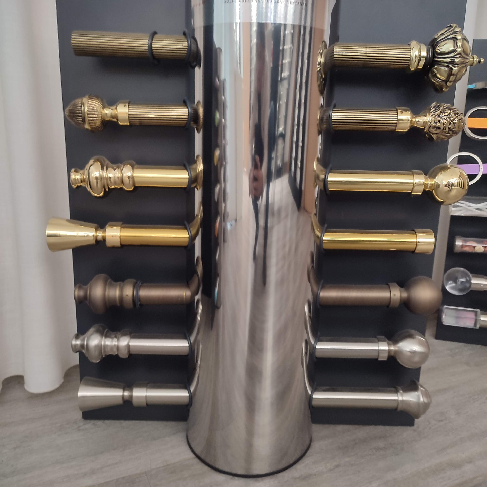
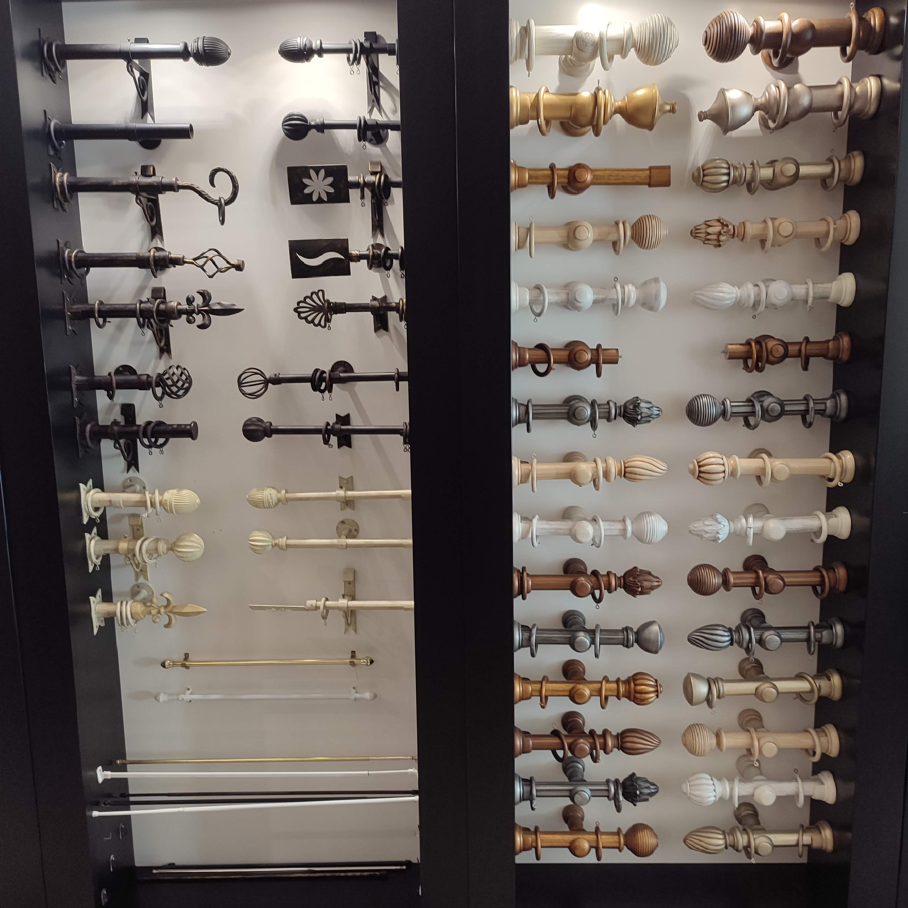
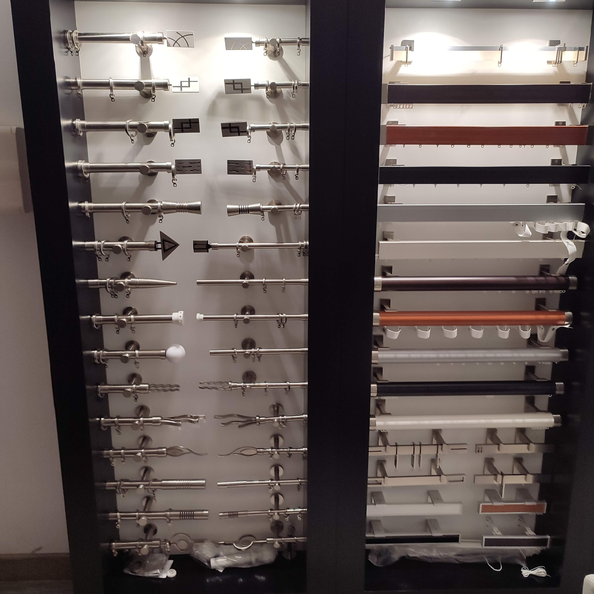
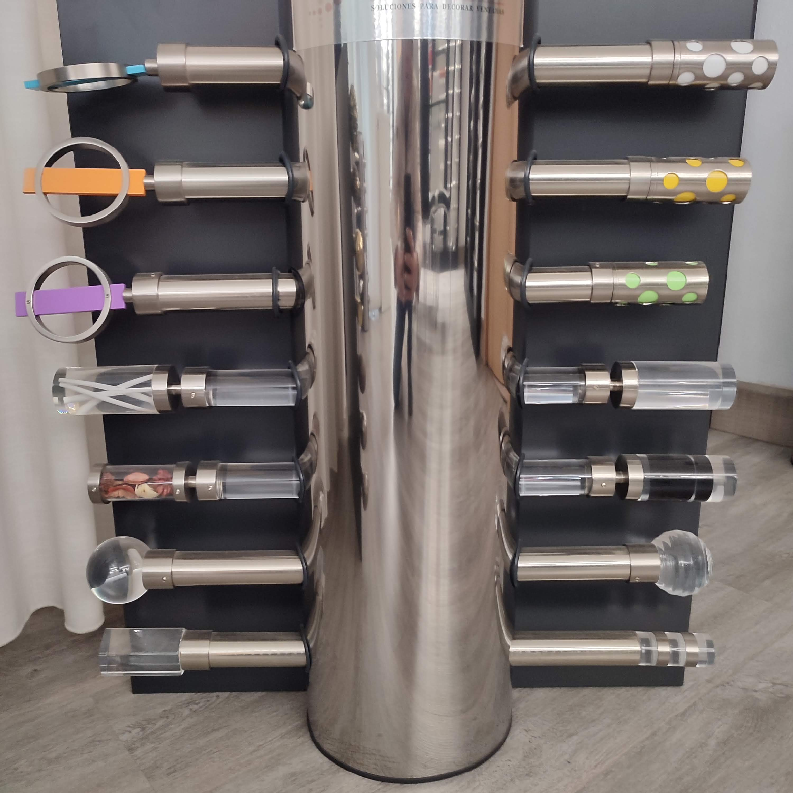

Barras
Forja, aluminio, niquel y madera con accesorios de alta resistencia.
Que ofrecemos
Las barras y soportes son clave para rematar la ventana con personalidad y estabilidad. Disponemos de acabados clasicos, modernos y decorativos para coordinar con el estilo del tejido.
Elegimos diametro, soportes y terminales segun el peso de la cortina y el tipo de pared para garantizar durabilidad.
Proceso de trabajo
Comprobamos anclajes, vuelo y longitud real de barra para evitar roces y asegurar apertura fluida. Instalamos nivelado final y verificamos el deslizamiento completo.
Galeria de barras y soportes



